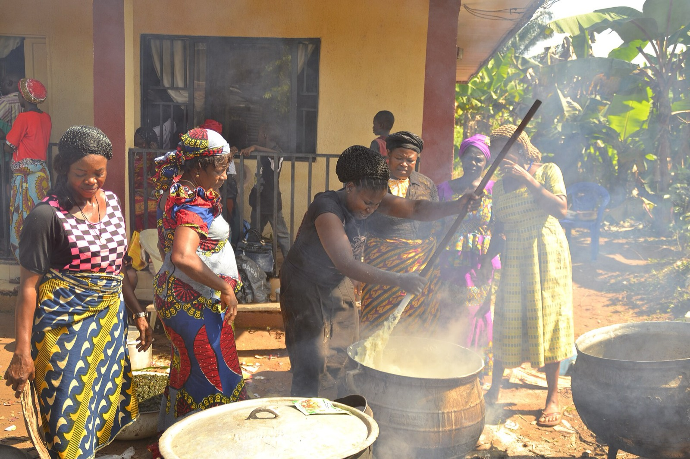
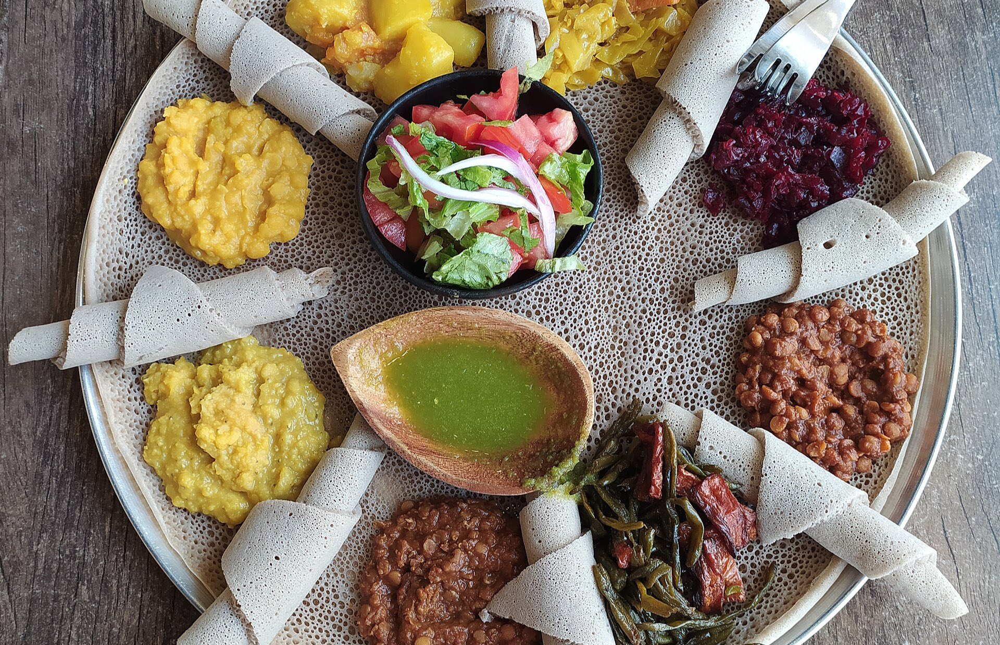
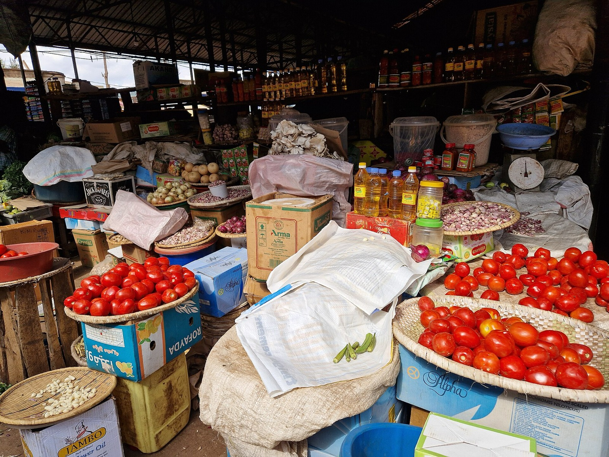
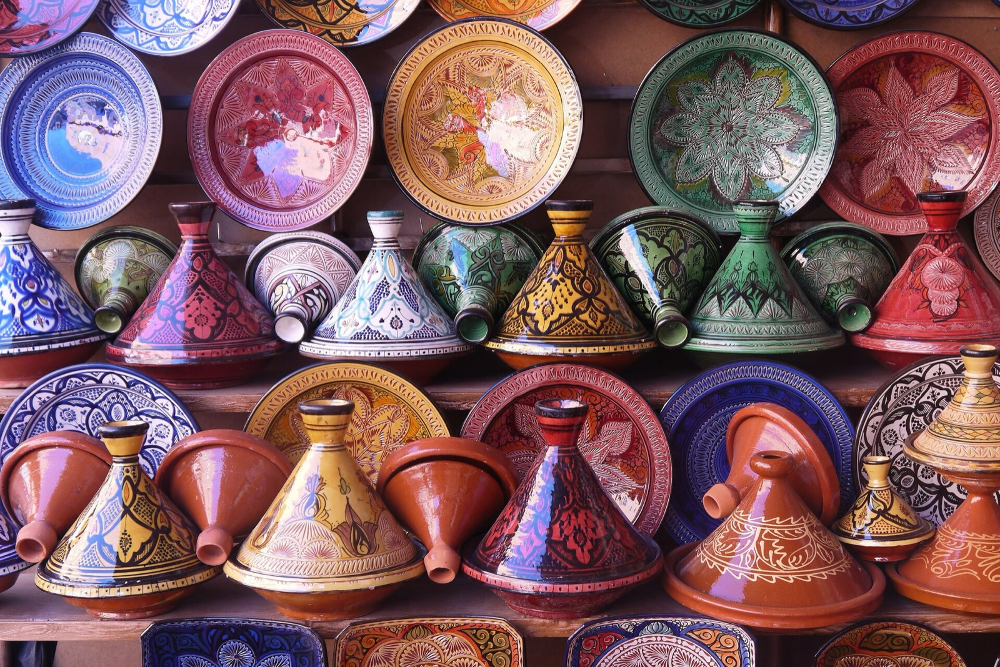

West Africa
Bold tomato and pepper sauces, pounded staples and hearty soups made for sharing.
Explore West Africa
Recipes · Regions · Heritage
Explore the rich flavors, traditional recipes, and culinary heritage that bring Africa together.
From our kitchen
Four dishes, four kitchens, and a place to start your journey across the continent.
 West Africa
West Africa
Nigeria · West Africa
Rice simmered in a rich tomato and pepper sauce, a centerpiece of West African celebrations.
 East Africa
East Africa
Rwanda · East Africa
Pounded cassava leaves slowly simmered with vegetables, palm oil and groundnuts.
 North Africa
North Africa
Morocco · North Africa
Chicken cooked gently with saffron, preserved lemon and olives in a golden sauce.
 East Africa
East Africa
Ethiopia · East Africa
A soft, gently sour teff flatbread that serves as plate, utensil and food at once.
A continent of flavors
Geography, trade and tradition have shaped how each part of Africa cooks and eats.

Bold tomato and pepper sauces, pounded staples and hearty soups made for sharing.
Explore West Africa
From highland teff and fragrant coffee to cassava leaves, plantains and charcoal-grilled meat.
Explore East Africa
Slow-cooked tagines, steamed couscous and warm spices shaped by centuries of exchange.
Explore North AfricaThe journal

Street Food
From suya grills to Kampala's rolex stands, the continent's most exciting cooking often happens by the roadside.
Read more about the rise of African street food
Ingredients
The grains, leaves, oils and spices behind the continent's flavors.
Read more about traditional African ingredients
Culture
From coffee to okra, African food has long traveled the world.
Read more about African food's global influence